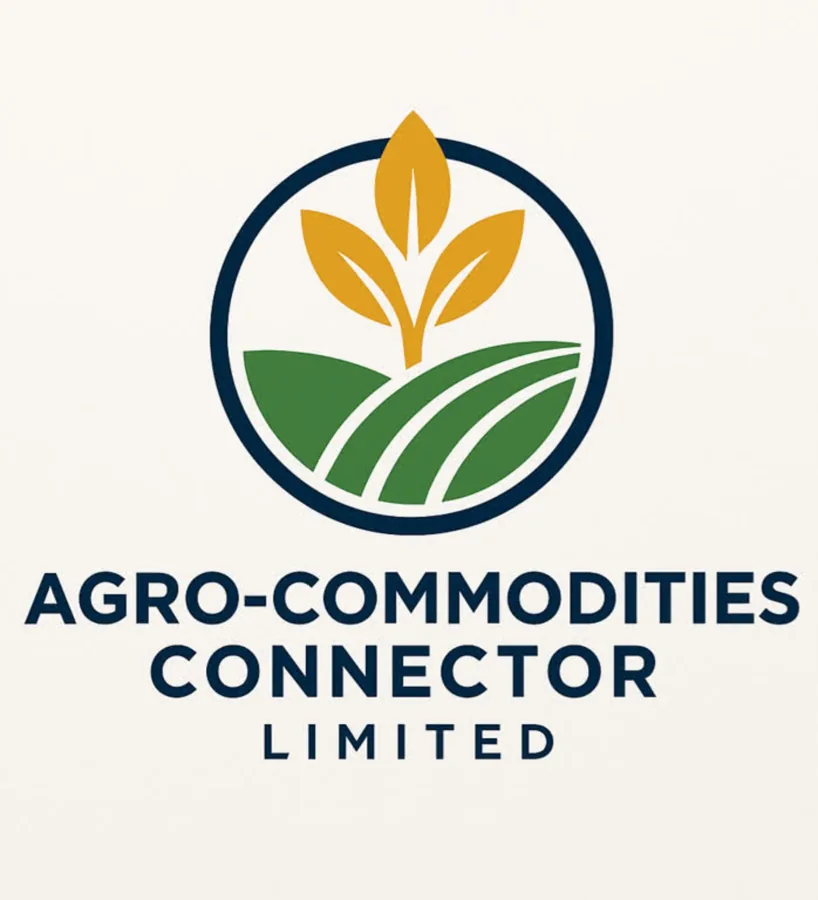

Tell us what you need
Commodity, grade, quantity, destination, packing and Incoterm.

SOURCE • VERIFY • CONNECT • EXPORT
A professional B2B sourcing platform for buyers looking for Nigerian agricultural commodities, supplier connections and export trade support.

B2B MARKETPLACE
Search the catalogue, review indicative information and send a direct sourcing request. Availability and specifications are confirmed per enquiry.
COMMODITY MARKET SNAPSHOT
Indicative planning values only. Final commercial prices depend on grade, season, volume, location, packaging and Incoterm.
| Commodity | Indicative unit | Market status | Buyer action |
|---|
* These are not live exchange or supplier quotations. Request a current offer for a transaction.
HOW IT WORKS
Commodity, grade, quantity, destination, packing and Incoterm.
We coordinate suitable supply channels and commercial information.
Compare specifications, availability and trade terms for your requirement.
Proceed with agreed terms and coordinate documentation and logistics.
FROM NIGERIAN SOURCES TO GLOBAL MARKETS
Our professional video area is ready for company introductions, commodity inspection clips, warehouse footage, sourcing visits and shipment updates.

When your company video is ready, replace the placeholder with your MP4 video file or connect the media library.
FOR INTERNATIONAL BUYERS
Submit your requirement once and structure the information needed for a useful sourcing response.
FOR NIGERIAN SUPPLIERS
Farmers, aggregators, processors and warehouse operators can register interest in joining our sourcing network.
Share your location, commodities, capacity and business details.
We review supply capability, quality information and supporting details.
Suitable supply can be considered for relevant buyer requirements.
TRADE TOOLS
Use these tools to prepare a clearer enquiry or understand common trade responsibilities.
Select a planning currency.
Understand common cost and risk responsibilities.
Build a simple starting payment-term proposal.
Build a simple delivery instruction.
Download a basic document checklist.
See what a useful buyer request should contain.
Review the key fields normally required.
Prepare your requirement for international discussion.
Start Enquiry →ABOUT AGRO-COMMODITIES CONNECTOR LIMITED
Agro-Commodities Connector Limited is a Nigerian agro-commodity sourcing and export company focused on connecting agricultural supply with domestic and international B2B demand.
Agro-commodities trading, agricultural sourcing, export, import, B2B commodity trading and international trade and supply-chain support.
✉ agrocomconltd@gmail.com
YOUR B2B ACCOUNT
Register, log in, reset your password and access a simple account dashboard. Role-specific workflows can be expanded as the marketplace grows.
START A TRADE CONVERSATION
Prepare a structured enquiry for the official business email.